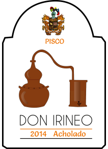

Unsere Produkte
Pisco Puro "Don Irineo"
Traube: Quebranta, 0,5l Flasche
Der einzigartige und sehr edle Schnaps wird an der Küste Icas hergestellt. Die ausschließliche Verwendung von Quebranta-Trauben geben ihm seine angenehme Milde und Geschmeidigkeit. Als Digestif bildet dieser Pisco aus den erfahrenen Händen Don Irineos den perfekten Ausklang einer jeden festlichen Tafel.


Pisco Acholado "Don Irineo"
Traube: Quebranta, Uvina, 0,5l Flasche
Ein grandioser Schnaps dessen Trauben in Ica reiften. Sorgfältig kontrollierte Brenntemperaturen sind das Geheimnis dieses Meisterwerks.
Fruchtig samt mit einem intensiven Bouquet verwöhnt dieser Pisco die Sinne.

{kind=link}
Pisco Acholado "Don Irineo"
Traube: Quebranta, Uvina, 0,5l Flasche
Ein grandioser Schnaps dessen Trauben in Ica reiften. Sorgfältig kontrollierte Brenntemperaturen sind das Geheimnis dieses Meisterwerks.
Fruchtig samt mit einem intensiven Bouquet verwöhnt dieser Pisco die Sinne.
Wein "Perfecto Amor"
Traube: Torontel, 0,75l Flasche
Dieser Rotwein hat die Sonne der peruanischen Küste in sich konzentriert. Er duftet herrlich nach Früchten und Gewürzen. Es ist jedoch der feine, köstliche, endlos lange Geschmack, der ganz besonders fasziniert.
Die Rebstöcke Icas liefern die süßesten Trauben des Landes. Nur die besten werden mit der Hand gelesen und für den Wein verwendet, der als Aperitiv genossen, lange in Erinnerung bleibt. Ein Kraftpaket mit reifer Frucht und seidiger Struktur, das nur in begrenzter Menge erzeugt wird.